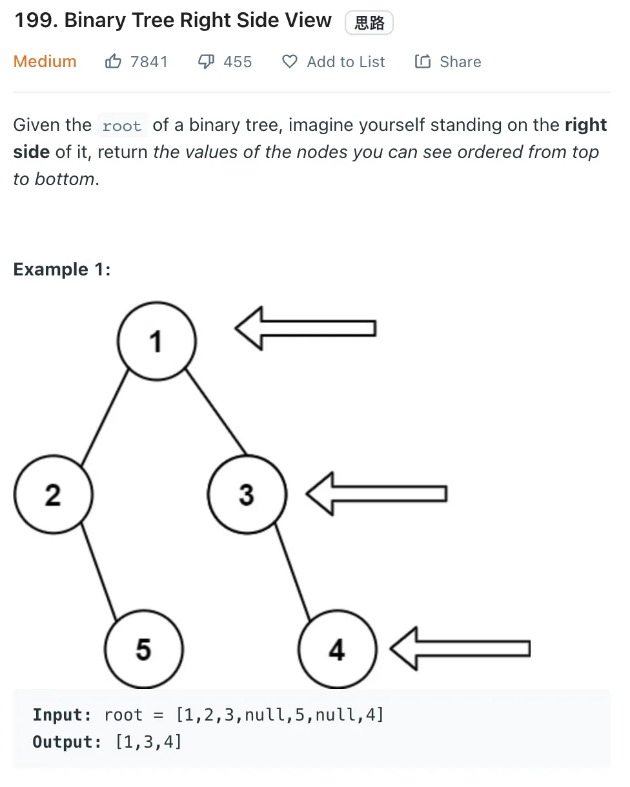
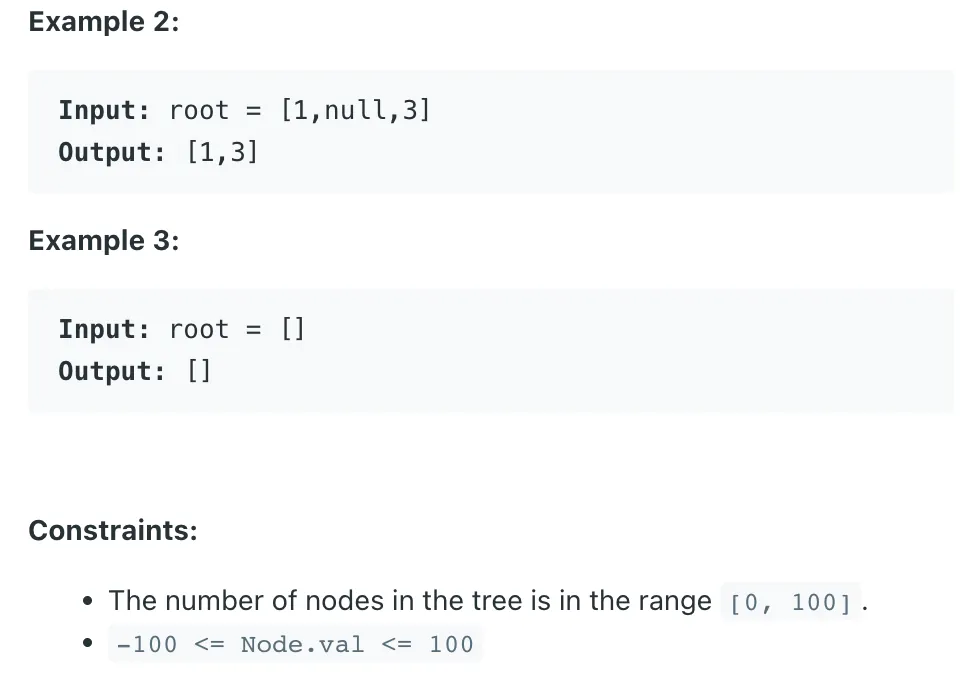

199. Binary Tree Right Side View
考過的公司：Amazon、Bytedance
Question


✍🏽 My Solution - BFS
Runtime: 2 ms, faster than 46.01% of Java online submissions for Binary Tree Right Side View. Memory Usage: 42.8 MB, less than 40.60% of Java online submissions for Binary Tree Right Side View.
class Solution {
List<Integer> res = new ArrayList<>();
public List<Integer> rightSideView(TreeNode root) {
if (root == null) return res;
Queue<TreeNode> queue = new LinkedList<>();
queue.offer(root);
while (!queue.isEmpty()) {
int levelNum = queue.size();
for (int i = 0; i < levelNum; i++) {
TreeNode cur = queue.poll();
// 每一层头部就是最右侧的元素
if (i == 0) res.add(cur.val);
if (cur.right != null) {
queue.offer(cur.right);
}
if (cur.left != null) {
queue.offer(cur.left);
}
}
}
return res;
}
}
🧠 Thought Process
- Why did I choose this particular implementation?
- 用 BFS 层序遍历算法，每一层的最后一个节点就是二叉树的右侧视图。我们可以把 BFS 反过来，从右往左遍历每一行，进一步提升效率。
- What is the time/space complexity of my solution? How do I know?
- time O(n)
- space O(n)
Solution #1 [BFS]
Solution #2 [DFS]
Runtime: 1 ms, faster than 94.70% of Java online submissions for Binary Tree Right Side View.
Memory Usage: 43 MB, less than 31.16% of Java online submissions for Binary Tree Right Side View.
class Solution {
List<Integer> res = new ArrayList<>();
public List<Integer> rightSideView(TreeNode root) {
if (root == null) return res;
traverse(root, 0);
return res;
}
private void traverse(TreeNode root, int depth) {
if (root == null) return;
// 前序遍历位置
if (res.size() == depth) {
// 这一层还没有记录值
// 说明 root 就是右侧视图的第一个节点
res.add(root.val);
}
traverse(root.right, depth+1);
traverse(root.left, depth+1);
}
}
Explanation (in my words)
- How does their solution work?
- 用 DFS 递归遍历算法，同样需要反过来，先递归 root.right 再递归 root.left，同时用 res 记录每一层的最右侧节点作为右侧视图。
- 使用depth紀錄第幾層
- What is the space/time complexity of their solution?
- time O(n)
- space O(n)